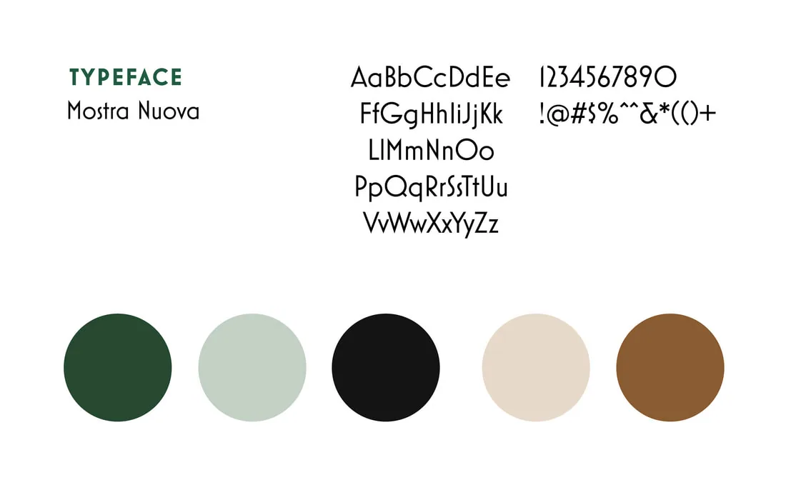
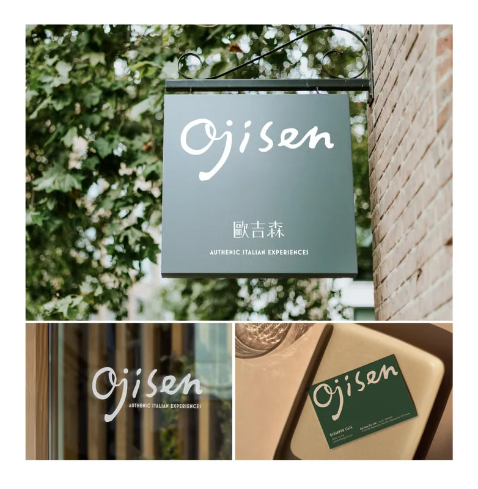

平面設計 ／ Visual Identity Project
歐吉森Ojisen
About
Ojisen 是由一群熱愛義式生活風格的中年人所創立，致力於將最美好的義大利生活風貌帶到台灣。品牌形象傳遞出放鬆、愉悅、親切、適合社交聚會與充滿歡樂氛圍的特質。品牌所選用的色彩靈感來自義大利葡萄酒文化，涵蓋酒桶、瓶塞、葡萄藤與起司等元素的色調。
Ojisen was founded by a group of middle-aged individuals passionate about bringing the best of Italian lifestyle to Taiwan. The brand embodies relaxation, pleasant vibes, a welcoming spirit, social gatherings, and a sense of conviviality. The chosen color palette is inspired by Italian wine culture — including hues reminiscent of wine barrels, corks, grapevines, and cheese.




